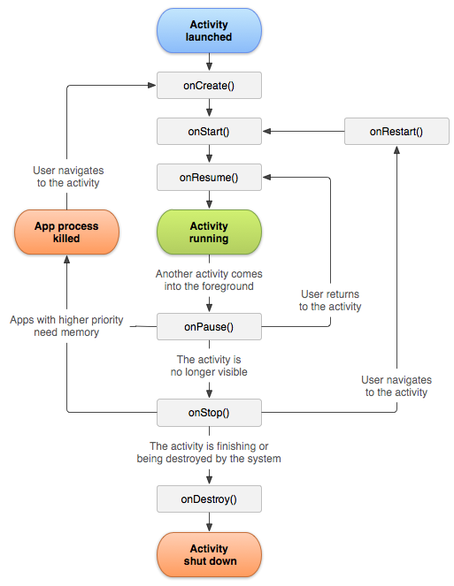
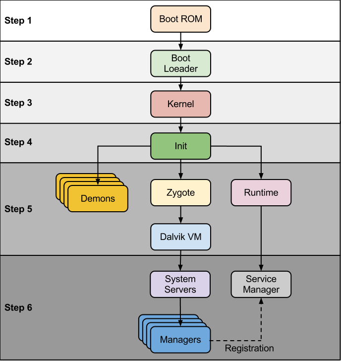
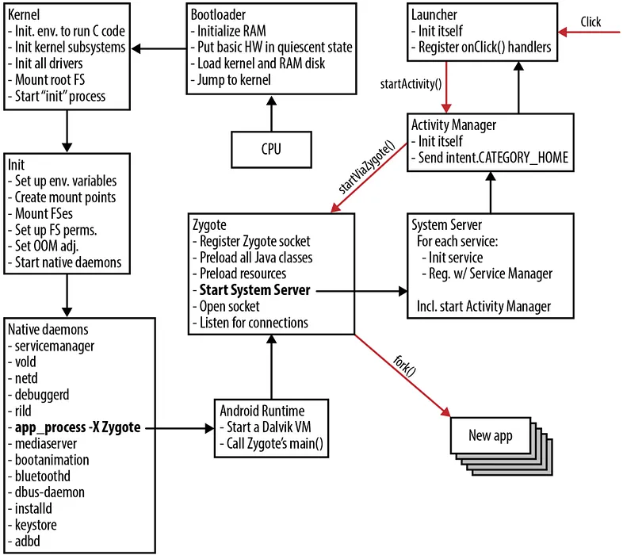

Questão 1 · verdadeiro ou falso
Todo aplicativo Android precisa ter pelo menos uma Activity.
Do XML à tela: como o Android cria, pausa e destrói uma Activity
IFSC Android ADS4 — DDM
Professor: Romulo de Aguiar Beninca
Encontro 2 — 10/08/2026 · Lab. INFO 2
O que são, para que servem e como se ligam ao layout XML.
ConstraintLayout, LinearLayout e a arte de organizar a tela.
Os 7 callbacks que toda Activity atravessa, do nascimento à morte.
Do boot ao fork() do Zygote: como um app nasce como processo.
Observando o ciclo de vida no contador de cliques e salvando estado.
A unidade básica de interface do Android
Uma Activity é um componente Android que geralmente representa uma tela ou uma área de interação com o usuário.
AndroidManifest.xml para existir.AppCompatActivity.MainActivity.Adicione componentes ao layout e veja o XML e o Java sendo gerados ao vivo — a mesma dupla XML ↔ código que você vai escrever no Android Studio.
No modelo tradicional baseado em Views, a Activity não desenha a tela sozinha — ela carrega um layout XML e passa a controlá-lo.
@Override
protected void onCreate(Bundle savedInstanceState) {
super.onCreate(savedInstanceState);
setContentView(R.layout.activity_main);
// carrega o layout XML e o define como conteúdo da Activity
}setContentView(); usa-se setContent { ... }.Acompanhe o que acontece na memória RAM quando o layout é inflado, e como o código encontra cada componente.
public class MainActivity extends AppCompatActivity {
TextView tvTitulo;
Button btnEntrar;
@Override
protected void onCreate(Bundle savedInstanceState) {
super.onCreate(savedInstanceState);
setContentView(R.layout.activity_main);
tvTitulo = findViewById(R.id.tvTitulo);
btnEntrar = findViewById(R.id.btnEntrar);
}
}Toda Activity precisa aparecer em AndroidManifest.xml — é assim que o sistema Android sabe que ela existe:
<application ... >
<activity
android:name=".MainActivity"
android:exported="true">
<intent-filter>
<action android:name="android.intent.action.MAIN" />
<category android:name="android.intent.category.LAUNCHER" />
</intent-filter>
</activity>
</application>MAIN + LAUNCHER: marca esta Activity como o ponto de entrada pelo launcher (ícone do app na tela inicial).intent-filter não é obrigatório em toda Activity — todas precisam estar declaradas em <activity>, mas normalmente só uma recebe MAIN + LAUNCHER.AppMainActivity ← MAIN + LAUNCHERLoginActivityDetalhesActivity
Revise a função da Activity e sua ligação com o layout e o Manifest.
Todo aplicativo Android precisa ter pelo menos uma Activity.
Qual método associa o XML à interface visível da Activity?
O que identifica a tela inicial no Manifest?
Organizando componentes visuais na tela
TextView, Button, ImageView, EditText...Existem outros: FrameLayout (empilha views), RelativeLayout (mais antigo, similar ao ConstraintLayout).
O layout do nosso contador de cliques usa constraints para centralizar o texto na tela:
<TextView
android:id="@+id/tvShowContador"
android:layout_width="wrap_content"
android:layout_height="wrap_content"
app:layout_constraintTop_toTopOf="parent"
app:layout_constraintBottom_toBottomOf="parent"
app:layout_constraintStart_toStartOf="parent"
app:layout_constraintEnd_toEndOf="parent" />constraintTop_toTopOf="parent" — prende o topo da View ao topo do pai.Revise Views, ViewGroups e posicionamento por constraints.
Qual elemento organiza outras Views e pode ser a raiz do XML?
LinearLayout organiza seus filhos em uma direção horizontal ou vertical.
No exemplo, o que centraliza o TextView nos dois eixos?
Do nascimento à destruição: os 7 callbacks fundamentais
Um celular é diferente de um computador: chamadas chegam, o usuário troca de app, a bateria acaba, a tela gira. O Android precisa de um jeito de avisar sua Activity quando cada uma dessas coisas acontece.

Fonte: developer.android.com/guide/components/activities/activity-lifecycle. Fluxo típico: onCreate → onStart → onResume (visível e interativa) → onPause → onStop (some de vista) → onDestroy ou onRestart → onStart (volta).
Clique nas ações do sistema (abrir, Home, trocar de app, Voltar, girar a tela) e observe qual estado é alcançado e quais callbacks são chamados, na ordem — o mesmo diagrama clássico do ciclo de vida, agora ao vivo.
setContentView(), findViewById(), inicialização de variáveissavedInstanceState — útil para restaurar estado salvofinish()) ou quando o sistema recria a Activity (ex.: rotação de tela)onDestroy() seguido de um novo onCreate() — a Activity é recriada do zero, e variáveis não salvas se perdem.onPause() é sempre chamado antes de onStop() — mas nem todo onPause() é seguido de onStop() (ex.: um diálogo transparente por cima não esconde a Activity totalmente).Ao rotacionar o dispositivo, a configuração muda e o Android recria a Activity por padrão:
contador vive apenas na instância da Activity, que acabou de ser destruída.A Activity não é destruída — fica parada em segundo plano, mantendo seu estado em memória.
Ao voltar para o app:
O usuário decidiu sair da tela — a Activity é destruída de forma definitiva (diferente da rotação, aqui não vem um onCreate() automático depois).
onCreate() chamado sem estado salvo anterior.Preveja os callbacks nos cenários apresentados.
O que ocorre por padrão quando a tela é girada?
Ao apertar Home, a Activity normalmente passa por onPause e onStop, mas permanece em memória.
Qual sequência representa o botão Voltar fechando a tela?
Do toque no ícone ao primeiro processo rodando o seu código

Antes de qualquer app abrir, o sistema já passou por boot ROM, bootloader, kernel Linux, init e os serviços nativos (visto na Aula 1). O Zygote nasce nessa etapa — e é ele quem gera cada app.
O Zygote é um processo especial, criado ainda durante o boot, que já vem com a Android Runtime (ART) e as classes principais do framework pré-carregadas na memória.
Ele funciona como um "molde": em vez de iniciar cada app do zero, o sistema faz um fork() do Zygote — muito mais rápido do que carregar tudo de novo a cada app aberto.

O toque dispara uma Intent no sistema, com os dados de qual aplicação deve ser iniciada — direcionada ao ActivityManager, serviço do Android Framework:
fork() do processo Zygote.O novo processo nasce como uma cópia do Zygote, já com a ART pronta, e recebe um PID (Process ID) próprio:
.dex) é carregado dentro desse novo processo.ApplicationContext — o objeto que dá acesso a recursos, preferências e serviços do sistema.ActivityManager chama o onCreate() da sua MainActivity.Cada app iniciado é um processo filho do Zygote, mas eles não duplicam toda a memória — reutilizam o espaço já carregado pelo processo pai:
Revise Intent, Zygote, fork e Copy-on-Write.
Por que o Zygote acelera a abertura dos apps?
Quem recebe a Intent e solicita a criação do processo do app?
Com Copy-on-Write, o processo filho copia uma região compartilhada somente quando precisa modificá-la.
Observando o ciclo de vida no contador de cliques e salvando estado
A forma mais direta de ver os callbacks acontecendo é logar cada um e observar no Logcat (visto na Aula 1):
private static final String TAG = "LifecycleDemo";
@Override protected void onCreate(Bundle savedInstanceState) {
super.onCreate(savedInstanceState);
setContentView(R.layout.activity_main);
Log.d(TAG, "onCreate");
}
@Override protected void onStart() { super.onStart(); Log.d(TAG, "onStart"); }
@Override protected void onResume() { super.onResume(); Log.d(TAG, "onResume"); }
@Override protected void onPause() { super.onPause(); Log.d(TAG, "onPause"); }
@Override protected void onStop() { super.onStop(); Log.d(TAG, "onStop"); }
@Override protected void onDestroy() { super.onDestroy(); Log.d(TAG, "onDestroy"); }adb logcat a sequência exata de callbacks de cada cenário da Parte 3.Para o contador sobreviver à rotação de tela, salvamos seu valor antes da Activity ser destruída:
@Override
protected void onSaveInstanceState(@NonNull Bundle outState) {
super.onSaveInstanceState(outState);
outState.putInt("contador", contador); // salva antes de destruir
}@Override
protected void onCreate(Bundle savedInstanceState) {
super.onCreate(savedInstanceState);
setContentView(R.layout.activity_main);
tvShowContador = findViewById(R.id.tvShowContador);
if (savedInstanceState != null) {
contador = savedInstanceState.getInt("contador", 0); // restaura
}
tvShowContador.setText(String.valueOf(contador));
}onSaveInstanceState() é chamado antes de onStop(), quando o sistema pode recriar a Activity (rotação, app em segundo plano sob pressão de memória).SharedPreferences ou um banco local — assunto de uma próxima aula.| Evento | Activity é destruída? | Variável comum sobrevive? | Com onSaveInstanceState? |
|---|---|---|---|
| Girar a tela | Sim | Não | Sim |
| Apertar Home | Não (só pausa/para) | Sim | — |
| Apertar Voltar | Sim (definitivo) | Não | Não |
| Sistema mata o processo (pouca memória) | Sim | Não | Sim (se o Bundle foi salvo a tempo) |
Revise observação dos callbacks e restauração do contador.
Como observar a sequência real dos callbacks executados?
Como o contador é recuperado após uma rotação?
onSaveInstanceState substitui banco de dados ou SharedPreferences para persistência definitiva.
setContentView() e é declarada no AndroidManifest.xml.onSaveInstanceState() salva dados de UI temporários para sobreviver a recriações do sistema.Encontro 3
Traga o contador de cliques com onSaveInstanceState funcionando — vamos evoluí-lo para guardar o valor mesmo depois de fechar o app.